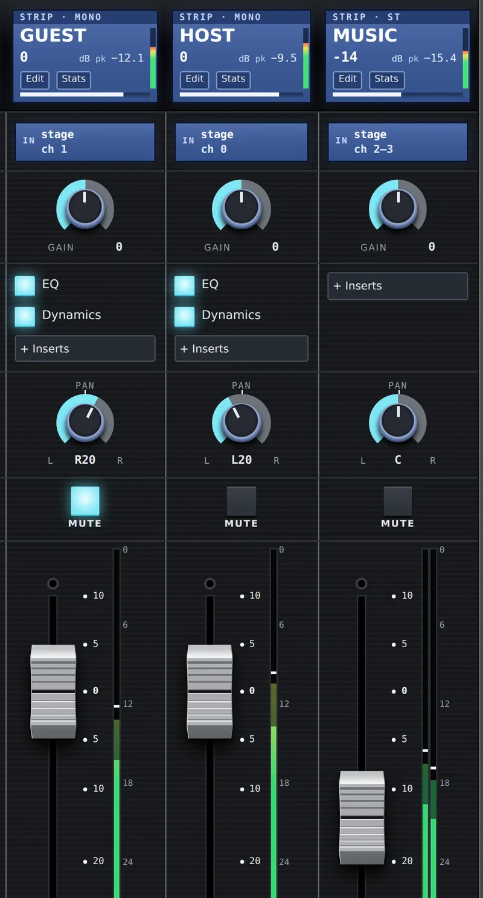
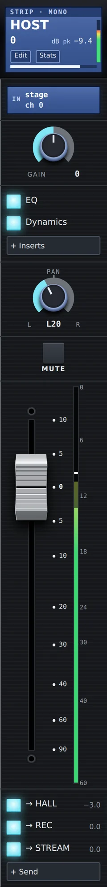
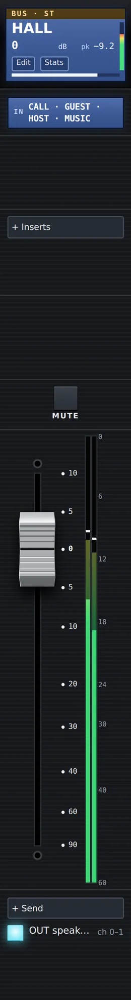
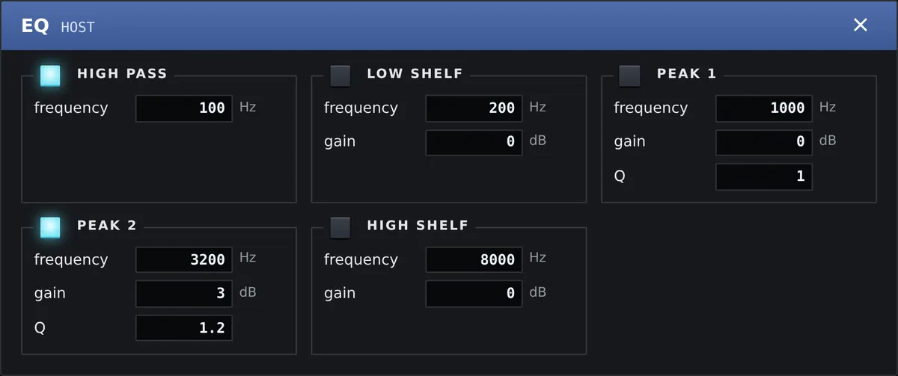
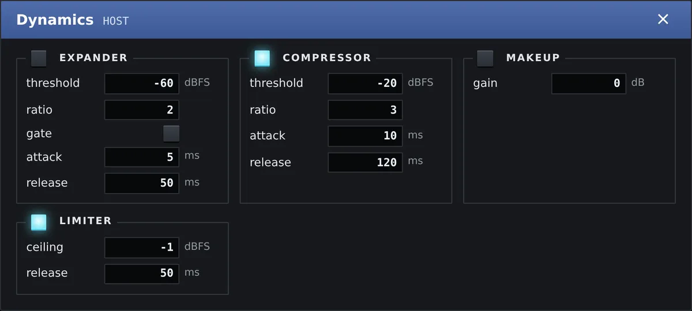

rate の違う卓どうしも、そのまま。
送る側は自分の sample rate のまま送り、受ける側が一度だけ変換します。48 kHz の卓と 16 kHz の卓も、同じ流れでつながります。
Browserブラウザの卓
ブラウザを開けば、そこが卓になる。
卓の画面は、ghidorah を動かしている PC でも、network の先の PC や tablet でも、ブラウザで開けます。縦に並ぶ列、縦の fader、その横の meter。物理の卓と同じ形で、そのまま手が動きます。
画面のつまみは、どれも program から REST で動かせ、変わった値は WebSocket で届きます。program が変えた値は、開いているどの画面にもすぐ映ります。
Python別の PC から
import httpx
mixer = "http://…" # 卓を動かしている PC
httpx.put(f"{mixer}/strips/MUSIC/fader_db", json={"value": -14})
httpx.put(f"{mixer}/strips/GUEST/mute", json={"value": True})
Mixer一通りの卓
insert 付きの channel strip と bus。卓に要る物が、一通りそろう。
入口の音を受ける channel strip にも、音をまとめる bus にも、EQ と dynamics を差せる insert の枠があります。send、PAN、mute、fader、meter まで、卓の部品を一通り持つ本物の mixer です。決まった主出力はなく、どの bus にも出口を割り当てられます。




Link卓をつなぐ
別の PC の卓とも、network で音を送り合う。
ghidorah の卓どうしは、ghidorah protocol で network の音を送り合えます。会場の卓から配信の卓へ、別の部屋の卓へ、Linux で動く卓へ。sample rate が違っても、clock がずれていても、音は途切れず、遅れも積み上がりません。
Windows · 44.1 kHz
配信の卓
会場のミックス 2 ch
遠隔のゲスト 2 ch
Windows · 48 kHz
会場の卓
マイク 4 ch
処理した声 1 ch
Linux · 16 kHz
声を処理する卓
流しっぱなしでも、clock のずれで途切れない
ここまでの卓どうし、機材どうしの clock のずれを、吸収し続ける
16 本の経路の clock のずれの吸収に使う、CPU 1 core の割合
送る側は自分の sample rate のまま送り、受ける側が一度だけ変換します。48 kHz の卓と 16 kHz の卓も、同じ流れでつながります。
Linux の PC でも、network の音どうしを混ぜる卓を動かせます。
bus の音を自分の program へ送り、処理して返した音を channel strip で受けられます。エコーの除去のような処理も、卓の外の program に任せられます。
8 時間と ±200 ppm は、仮想の時刻で 8 時間分の音を流す test と、5,117 の条件で確かめています。
Install導入
wheel を二つ入れて、一行で卓が開く。
GitHub の Release から、使う OS の ghidorah の wheel と、卓の画面の wheel を取って入れるだけ。一行で起動すれば、ブラウザに卓が開きます。使い方は、公開用の repository の文書にまとめています。
PythonWindows · Linux
# GitHub の Release から、二つの wheel を取った後
python -m pip install GHIDORAH_WHEEL CONTROL_WHEEL
# 卓を起動し、ブラウザで http://127.0.0.1:8000/ を開く
python -m ghidorah_control mixer.yamlGHIDORAH_WHEEL は使う OS の ghidorah-<version>-cp312-abi3-*.whl、CONTROL_WHEEL は ghidorah_control-<version>-py3-none-any.whl の path に置き換えます。mixer.yaml は、卓の設定 file です。